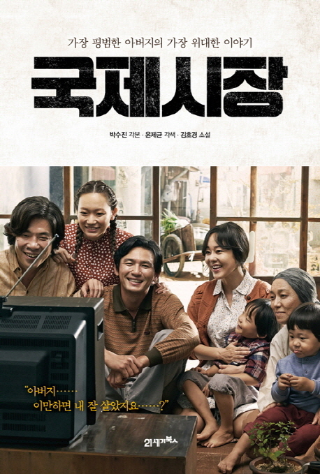
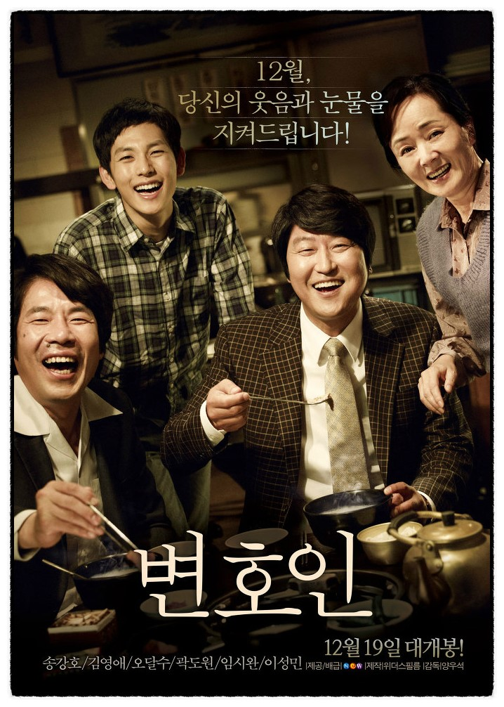

| 1.베테랑 | 2.국제시장 | 3.변호인 |
|---|---|---|
|
▶개요: 액션,드라마 (123분) ▶출연: 황정민, 유아인, 유해진 등 ▶관객수: 13,414,484명 ▶개봉일: 2015.08.05 ▶감독: 류승완 다운로드 |
▷개요: 드라마 (126분) ▷출연: 황정민, 김유진, 오달수 등 ▷관객수: 14,263,940명 ▷개봉일: 2014.12.17 ▷감독: 윤제균 다운로드 |
▶개요: 드라마 (127분) ▶출연: 송강호, 김영애, 오달수 등 ▶관객수: 11,375,123명 ▶개봉일: 2013.12.18 ▶감독: 양우석 다운로드 |
|  |  |